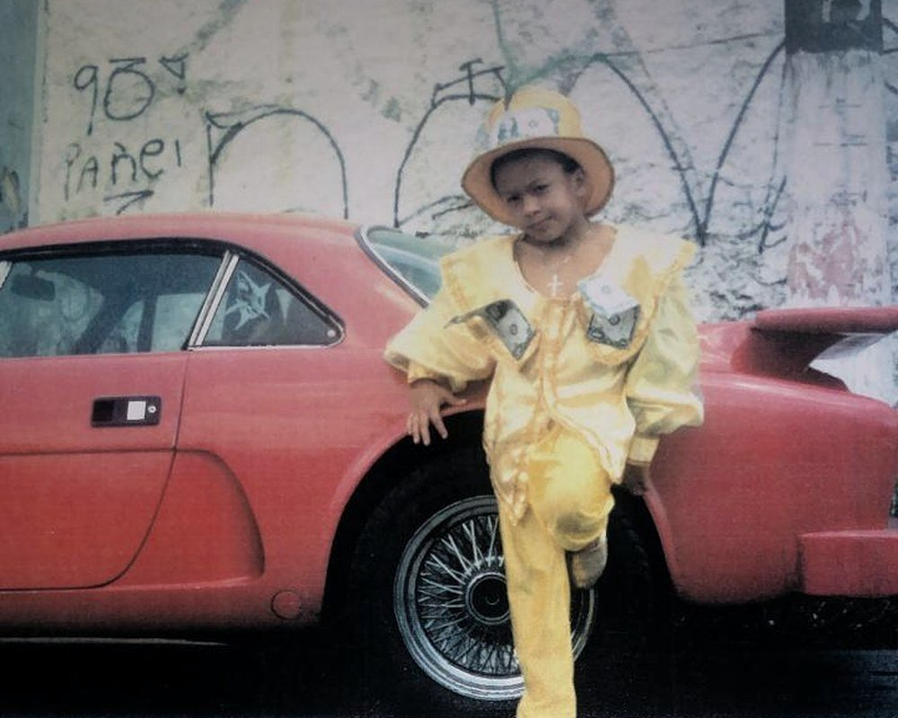
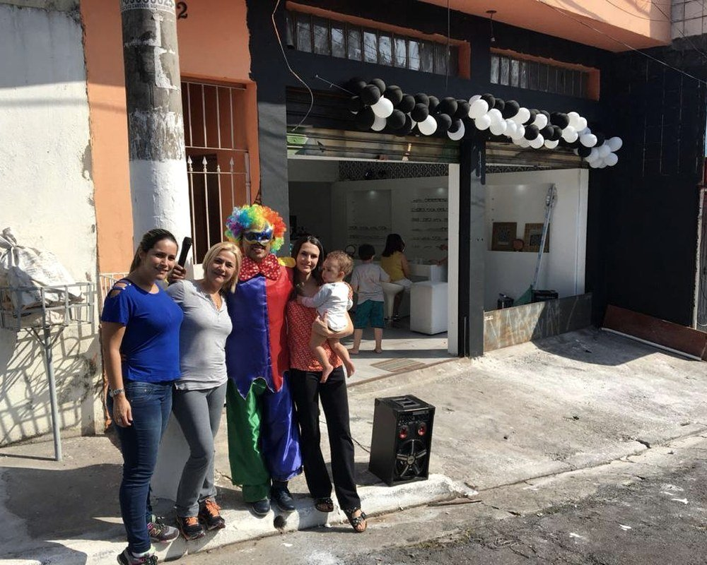
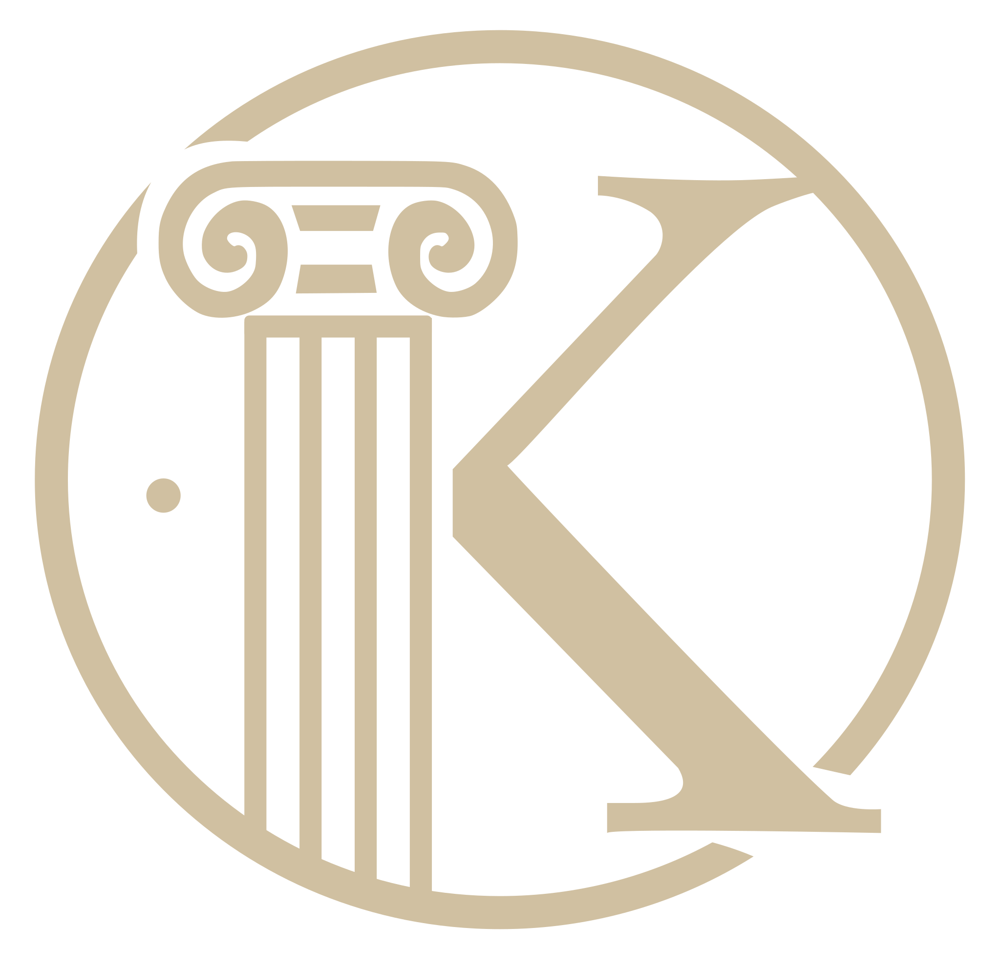

Abre em breve
1º lote
R$197
- Os 2 dias completos, sexta e sábado
- Marketing, vendas e gestão com o Dr. Ade Salami
- Edifício Itália, São Paulo
Marketing, vendas e gestão para médicos donos de clínica, do jeito que rodam hoje no Instituto Kós. Aberto também a outros profissionais da saúde.

1º lote R$ 197 · depois R$ 497 e R$ 997
Capítulo I · O teto invisível
Agenda cheia
100pacientes por dia
No plantão, para sustentar a própria clínica.
Clínica que cresce
Ninguém cresce trabalhando mais.
Cresce quando para de improvisar.
Eu vendia pouco. Indicava muito.Dr. Ade Salami
Capítulo II · A virada
Ele juntou o que aprendeu fora do consultório com o que nunca deixou de ser: médico.
“Coloquei tudo em uma coqueteleira.”
“Depois que criei meu próprio método.”
Histórico da própria operação do Instituto Kós. Não é projeção de resultado para quem aplica o método.
O paciente não decide no anúncio. Decide depois de entender.
Por isso o método organiza a compreensão em sequência: primeiro uma razão para conversar, depois confiança, depois clareza sobre o processo.
Tração é sequência. O anúncio é só a primeira etapa.
Cada etapa tem o seu indicador e o seu limite ético, dentro do que a Resolução CFM 2.336/2023 permite.
Capítulo III · Os 2 dias
2dias, das 8h às 18h, no Edifício Itália
Sexta · 18 de dezembro · 8h às 18h
Marketing e vendas: do primeiro contato à indicação.
É necessário ter um método.
Sábado · 19 de dezembro · 8h às 18h
Pessoas, processos e tecnologia.
O paciente não espera horário comercial. A sua concorrência também não.
Encerramento · Processo de Criação
O poder de transformar o abstrato em realidade concreta.
DesejoRazãoIntençãoDecisãoPlano mentalCrençaConhecimentoPlanejamentoAçãoPersistênciaFeedbackMastermindMaterialização
Das 8h às 18h nos dois dias. Ordem dos temas sujeita a ajuste.
Horário de cada bloco e intervalos · a definir Materiais entregues ao participante · a confirmarCapítulo IV · Quem conduz

Esta fórmula não nasceu em um livro. Nasceu dentro do meu consultório, com a conta da clínica para pagar no fim do mês.
Do plantão à primeira clínica, que ele chama de “meu primeiro filho”. Da clínica ao método, que o levou de 4 para 60 pacientes por mês. E do método ao Instituto Kós, que hoje fatura R$ 5 milhões por mês. É esse caminho que ele abre em dois dias.
CRM / RQE · a confirmar
Decide fazer medicina. Aos 19, entra na faculdade.

Os primeiros salários, ao lado de colegas exaustos.

Oftalmologia. Sozinho. “Meu primeiro filho.”

R$ 5 milhões de faturamento por mês.
Tudo que é grande, um dia foi pequeno.
Capítulo V · Para quem é
E aberto a profissionais da saúde com consultório ou clínica.
Capítulo VI · A decisão
Mesmo evento e mesmo conteúdo nos três. O que muda é quando você entra.
“Decidir é assumir um compromisso consigo mesmo.”Processo de Criação
Abre em breve
R$197
Depois
R$497
Por último
R$997
Dúvidas
Sexta e sábado, 18 e 19 de dezembro de 2026, das 8h às 18h nos dois dias, presencial no Edifício Itália, em São Paulo.
Serve. O foco é o médico dono de clínica, mas o evento é aberto a profissionais da saúde com consultório ou clínica. Cada um segue as regras do próprio conselho.
Cada gatilho da Fórmula de Tração vem com o seu limite ético, e o evento passa pelo que a Resolução CFM 2.336/2023 permite e veda na publicidade médica.
Nenhuma no conteúdo. O preço sobe a cada virada: R$ 197 no 1º, R$ 497 no 2º e R$ 997 no 3º.
18 e 19.12Edifício Itália · São Paulo